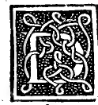

CAPITOLO II¶
Dela distantia del profilo al cotozzo de dicta testa cioè al ponto a. qual chiamano cotozzo edele parti che in quella se interpongano ochio e oregia.

Detto del profilo dela testa humana e sue diuisioni in maiesta requisite. Ora sequente diremo dele proportioni delochio de loregia. Onde acio se intenda nostro dire prima diuidaremo la larghezza del proposto tetragono sk. similmente in tre parti equali conine de sua longhezza fo facto. E diuiso ms. in tre equali luna fia mo laltra oq. la terza qs. E poi a più chiara vostra notitia cadauna de queste terze diuidaremo in doi parti equali neh ponti n. p. r. E ciascuna depse fia la sexta parte de tutta dieta larghezza ms.
E queste ancora porremo subdiuidere in altra mita e serebono duodecime del tutto e queste tali ancora in altre doi equali parti e ognuna seria la vigesimaquarta del tutto. E cosi potremmo andar quanto cipiaci diuidendolo in parti note a noi secondo magiore e minor larghezza. E quante più parti se fa note tanto fia più comodo al prospectiuo peroche meglio vene con lochio aprenhendere la quantità dela cosa che voi porre o sia testa o sia che altra cosa sevolia comme animali albori hedifitii etc.
E per questo li pictori se hano formato certo quadro o vero tetragono longo comraolti sotili fili tirati, de citerà o seta o nerui grandi e picoli comme alor pare in lopere che hano adisponere in tela taula o muro. Doue sopra la propria forma ponendo detto tetragono e quello ben fermata che non si possa per alcun modo crollare fralui eia cosa che intende retrare la qual cosà medesimamente bisogna che la sia ben fermata secondo el sito che la voi fare.
E lui poi se asetta a sedere ritto in genochioni comme meglio li pare stare acomodato e col suo diligente ochio guardando or qua or la quella cosa considera li termini de quelli fili comme respondeno per longo e largo sopra dieta cosa. E cosi loro con suo stilo lauanno segnando in foglio o altroue proportionando li quadreti de dicto tetragono per numero equantita magiore o menore a quello e sbozando formano lor figure quali poi vestano dela gratia visuale. E questo tale instrumento fia dicto da loro rete.
Comme vedete qui in la testa del quale instrumento qui non curo poner altra forma, peroche facil sia per le cose dette sua aprehensione. Ora tornando al nostro proposito dela testa trouarete lochio col desotto e sopra cilio dele palpebre comunamente essere alto el sexto de tutto el profilo mk. quale non ho curato con linee ofuscarlo ma voi con lo vostro sexto facilmente lo trouarete e altre tanto largo. Lorechio se ben quandate esser alta quanto la longhezza del naso cioè el terzo de diclo profilo.
E largo vn sexto dela larghezza de detto tetragono ms. eia magior sua ampiezza fia diametraliter fral cotozzo e gobba del naso aponto super lo catheto a. terminata de sotto ala ponta del naso e principio dela guancia. El collo fia li doi terzi de la dieta larghezza ms. cioè quanto os. e cosi responde la ponta del petto enodo de la gola. Lo occiputto cioè amodo nostro la cicotola excede dieta largheza adrieto per doi terzi del suo sexto cioè per vn nono de tutta ms. el uertice cioè la cima del capo excede la radice di capelli per lo sexto de dieta ms. in altezza cioè fin al ponto p. qual fia el suo mezzo.
Laltre parti poi vanno degradando’: proportionalmente alor contorno dal p. al onm. angolo del tetragono dinanze e cosi drieto dal dicto p. al qrs. con quella gratia e arbitrio che del mento e radise de cappelli fo detto secondo loro. Irrationali proportioni cioè innominabili per alcun numero e suoi parti integrali. E questo volio basti quanto a tutta testa o ver capo e sequendo diremo de dicta testa a tutto el corpo e suoi altri membri exteriori la sua debita proportione acio dopo quella possiate megho formare vostri lauori.